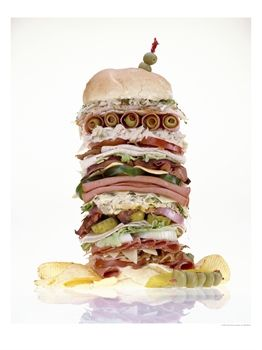
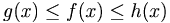
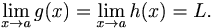
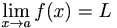
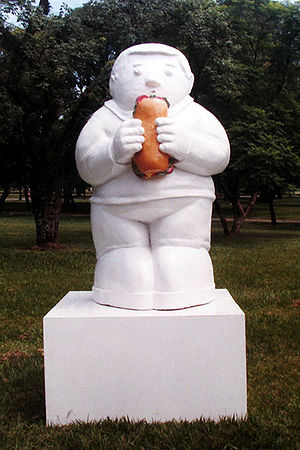

Sándwich
 De: La Frikipedia, la enciclopedia extremadamente seria.
De: La Frikipedia, la enciclopedia extremadamente seria.
| De la serie alimentos y otras vainas:
|
|
|
| Nombre:
|
Sandwich
|
| Tipo de Comida:
|
Bocadillo
|
| ¿Como se Come?
|
Introduciendo una parte razonable en la boca y accionando el mecanismo mágico de la mandíbula.
|
| ¿De donde Proviene?
|
Se han dado casos de sandwiches en todo el mundo
|
| Ingrediente Basico:
|
Pan, casi seguro. Además de lo que se le meta dentro.
|
| Forma de Presentación
|
Frío o caliente, en un plato o en una caja de plástico si estás en un aeropuerto.
|
| Sabor:
|
El mixto sabe a mixto, etc...
|
El Sandwich, uno de los principales ejes de la historia humana, también conocido como Sánguche, Sandwiche, Sámbuche o Chámbuche, es una práctica milenaria creada bajo las manos de Diox cuando todavía no existía Bilbao, y su descubrimiento ante los mortales se lo debemos al Conde de Sandwich, que dedicó su vida en pro de encontrar un tentempié barato capaz de competir con las masitas finas.
Esta práctica poderosísima consta de intercalar panes con queso, jamones, salames, e infinidad de alimentos archi-perecederos llamados fiambres.
Frases Célebres con apología al consumo de Chámbuche
«Yo quiero un sánguche»
~ Alejo y Valentina sobre los chanwis
«El Choripan, que no es mas que chorizo y pan»
~ Calico Electronico sobre su arma secreta para derrotar a los pelusos carmbanales
Historia
Aquí un pequeño resumen de la historia del sandwich a través de los siglos.
Pre-historia del sandwich
 La Torre de Sandwich, en la Isla de Creta.
El Conde de Sandwich
- 1718: Nace el Conde de Sandwich en una familia de aristocratas. Su padre estaba encantado de haber sido nombrado jefe herrador de su majestad el Rey, posición de la que disfruta durante bastantes años hasta que descubre que no es mas que un simple herrero y renuncia amargado. La madre es una simple ama de casa de origen germánico, cuyo menú consiste en manteca de cerdo y venado, aunque a veces demuestra cierta imaginacion culinaria al confeccionar un postre de nata, huevos, vino y azucar, de dudosos beneficios instentinales.
- 1725-1735: Asiste a la escuela donde aprende a montar a caballo y latín. En la escuela toma contacto por primera vez con los embutidos y muestra especial interés por los cortes muy finos de salchichón y jamón. Para cuando se gradua, esto se ha convertido en una obsesión y, aunque su tesis sobre "El analisis y los fenomenos derivados de la merienda de la tarde" llama la atención de los profesores, sus compañeros de estudio le consideran, un tipo raro.
- 1736: Ingresa por fin en la universidad de Cambridge, a instancia de sus padre, para seguir sus estudios de metafiísica y retórica, pero muestra poco entusiasmo por los mismos. En constante rebelión contra todo lo académico, es acusado de robar pan y de llevar a cabo experimentos antinaturales con ese material . Las acusaciones de herejía determinan su expulsión de la universidad.
- 1738: Desheredado, se refugia en los paises escandinavos donde, durante tres años, estudia intensivamente el queso. Fascinado por la gran variedad de quesos existentes por aquellas latitudes decide, regresar definitavemente a Inglarerra, donde conocera a Nell Smallbore, la hija de un verdulero, y contrae matrimonio. Ella le enseñará todos sus conocimientos sobre la lechuga.
- 1741: Residente en el campo con una modesta herencia, trabaja día y noche, apretando con frecuencia el cinturón para ahorrar y comprar comida. Su primera obra completa, consistía en una rebanada de pan, otra rebanada de pan encima de la primera y un trozo de pavo encima de las dos rebanadas. Fracasa miserablemente, por lo que desilusionado hasta la amargura, regresa a su estudio y vuelve a empezarlo todo de nuevo.
- 1745: Despues de cuatro años de frenética labor, está convencido de haber alcanzado la antesala del éxito. Expone ante sus colegas dos trozos de pavo con una rebanada de pan en medio. Todos rechazan su obra, salvo David Hume, que presiente la inminencia de algo grandioso y le alienta a seguir. Enhardecido por la amistad del filósofo, vuelve a su trabajo con renovado vigor.
- 1747: En la miseria, no puede darse el lujo de trabajar con pavo y se dedica al jamón que es mas barato.
- 1750: En primavera, expone tres trozos consecutivos de jamón, uno encima de otro, y hace una demostración que sólo despierta cierto interés en círculos intelectuales y que pasa desapercibido para el gran público. Tres rebanadas de pan apiladas aumenta su reputación y aunque, todavía no se evidencia un estilo maduro, Voltaire muestra su interés por conocerle.
- 1751: Viaja a Francia donde el filósofo Voltaire acaba de lograr interesantes resultados con pan y mahonesa. Los dos hombres se hacen amigos, y se inicia una larga correspondecia que termina abruptamente cuanto a Voltaire se le acaban los sellos postales.
- 1758: Su creciente aceptación entre la prensa británica, hace que la Reina le encargue algo especial con motivo de un almuerzo con el embajador de España. Trabaja día y noche experimentando con cientos de posibilidades y, por fin, a las 16 horas, 17 minutos del 27 de abril de 1758, crea la obra que consiste en varias tajada de jamón cubiertas, por encima y por abajo, por dos rebanadas de pan de centeno. En un golpe de inspiración, adrna la obra con mostaza. Es el éxito inmediato, y queda encargadopara el resto del año de los almuerzos del sábado.
- 1760: Cosecha éxito tras éxito, creando sandwiches, como se los denomina en su honor, con pollo, huevo, y casi cualquier fiambre concebible. No satisfecho con repetir fórmulas ya ratadas, busca nuevas ideas y elabora el sandwich mixto. Por su nueva creación, la Reina de Inglaterra le concede un Ducado en su nombre.
- 1769: En su residencia de campo, recibe la visita de los hombres mas ilustres de la época. Haydn, Kant, Rousseau y Ben Franklin se detienen en su casa, algunos disfrutando de sus admirables creaciones y otros con pedidos para llevar.
- 1783: Para celebrar el sexagésimo quinto cumpleaños, inventa la hamburguesa y hace giras personales por las granes capitales del mundo preparando hamburguesas en salas de concierto ante numerosas y agradecidas audiencias, En Alemania, Goethe, sugiere servirlas con panecillos, una idea que deleita al conde. Inician una larga amistad, que se quebranta al año por una desavenencia en torno a los conceptos de crudo , medio hecho y hecho.
- 1790: En una exposición retrospectiva de su obra celebrada en Londres, sufre un súbito ataque de dolres de pecho, y se supone una muerte inminente, pero se recupera lo suficiente para supervisas la construcción de un monumento al sandwich promovida por un grupo de talentosos seguidores. Su inauguración en Italia, produce serios disturbios y allí permanece incomprendido salvo por unos pocos críticos.
- 1792: Fallece mientras duerme y los médicos no pueden tratarle a tiempo. Es enterrado en la abadía de Westminster, y miles de personas presencian sus funerales.
Post-Conde de Sandwich (D.CS.)
Combinaciones
Las combinaciones más usuales son:
Poderes Ocultos
Se dice que la práctica del Chambuche es un arte que puede liberar poderes oníricos del tipo B, tales como el estado de Empanada mental.
Según la leyenda, Hitler mandó a su ejército en busca de tales poderes para su beneficio personal. Por suerte, su ejército le trajo a cambio el Kentucky Fried Chicken por error, y así declinó el poderío nazi.
Teorema del Chámbuche (matemáticas)
Existe un teorema matemático denominado "de intercalación", también conocido como "Teorema del chámbuche" que se puede aplicar a todo Chámbuche del dominio Real.
Con el teorema del chámbuche podemos probar que el límite de lo que vaya dentro del aperitivo está determinado por el límite de las dos rodajas de pan que lo contienen. Se expone de la siguiente manera:
- sii ,
tal que g(x) y h(x) son panes y f(x) es el queso con mortadela
- ^ 
- Entonces => .
Y de esta forma se demuestra que si el volumen de los panes es el mismo para ambos, entonces la capacidad del contenido comestible será equivalente a este volumen de límite "L".
De cumplirse este teorema en un chámbuche promedio, se dice que tenemos un "chámbuche equilátero" de calorías proporcionales.
También existe el "teorema del chámbuche de jamón", pero para comprenderlo es necesario llegar al estado de sahumerio bolivariano.
 Monumento al Chámbuche encontrado en las ruinas de Pompeya.
Islas Sandwich (geografía)
Aunque están en los mares argentinos actualmente le pertenecen al Reino Hundido de Gran Bretaña e Islandia del Norte (Que raro eh), aunque realmente están habitadas por pingüinos, lemmings y tostadas.
Poco se saben de ellas, y la verdad que a nadie les importa un carajo.
Sandwich (sexo)
Práctica relativa al sexo que es realizada por una mujer y dos hombres, o dos mujeres y un hombre, o dos ciborgs y una ardilla.
Véase también
Autor(es):
- Nexo
- Fly
- Frikih
- Sastre
- Lo Mas Freak Que Ha Parido Madre
- Cibercrank
- Alabarricada
- ArreKarallo
- Michael-Myers
- Th´albert
Frikipedia 2005-2016, Licencia
GFDL 1.2 - Extraído por FrikiLeaks